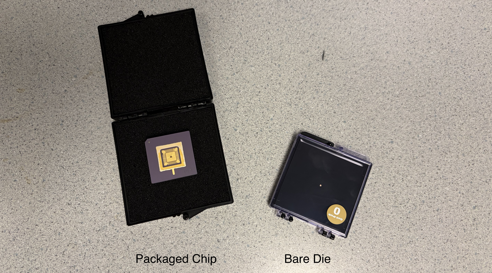
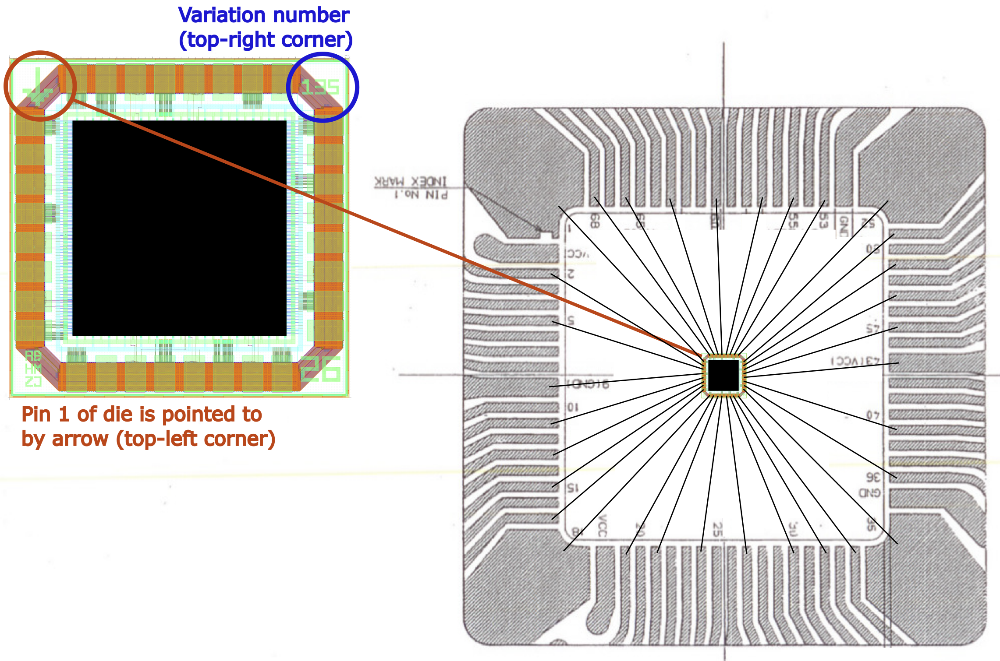
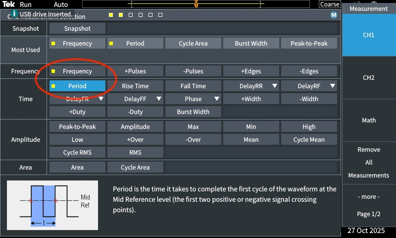
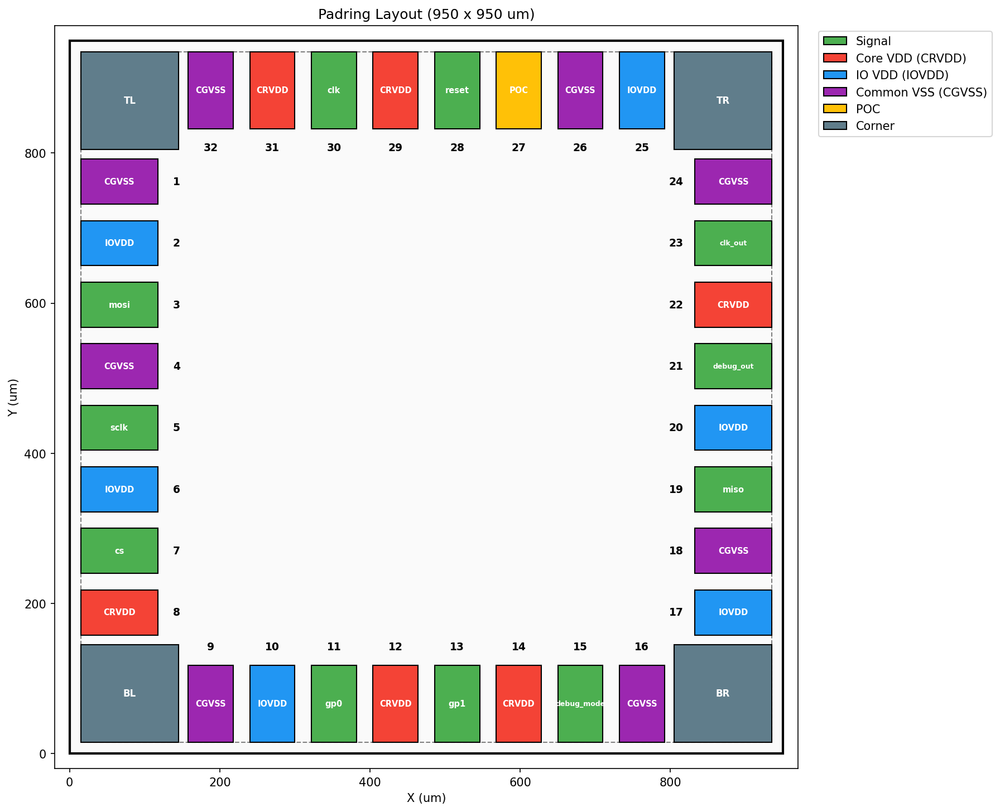
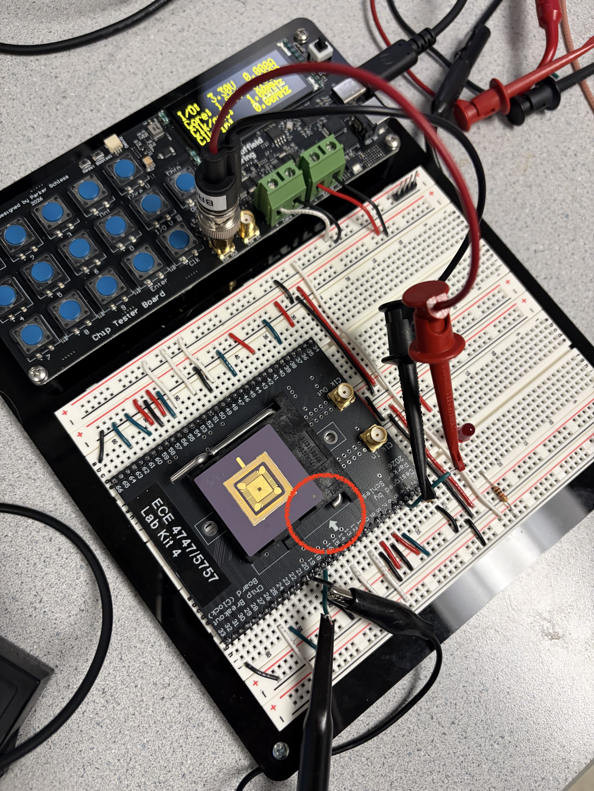
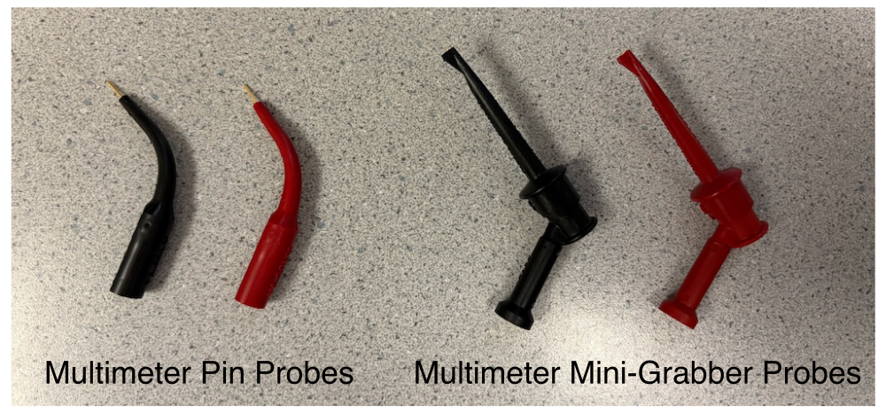
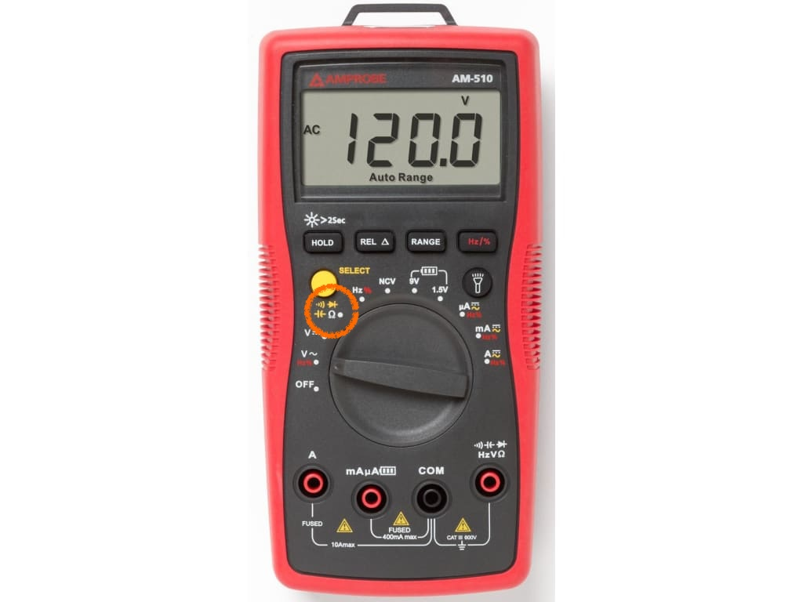
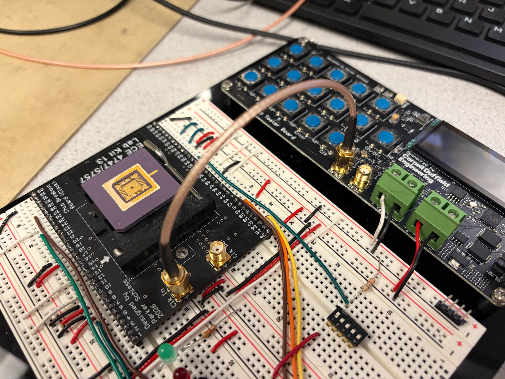

Lab 3: Clock Testing
In this lab, you will inspect your chip under a microscope before inserting it into the breakout board and testing the clock loopback path through your chip. This is your first chance to see your chip and to verify that the most basic capability is working!
1. Microscope
We are now going to look at your chip under the microscope! For this lab, we will be using a relatively simple microscope. At the end of the semester, students will have a chacne to use a much more sophisticated microscope to be able to take a high quality photo of their chip. You should have two versions of your chip:
-
Bare Die: This is the version of the chip that was sent from TSMC to MUSE, and which MUSE then sent to QP Technologies. The bare die is stored in a special box called a "GelPak". The bare die is just for us to look at. We will not be actually testing the bare die.
-
Packaged Chip: This is the version of the chip that was sent from QP Technologies to Cornell after the chip was wire bonded in a ceramic pin grid array (CPGA) package. The packaged chip is stored in a special box which protects it from electrostatic discharge (ESD). The packaged chip is what we will be actually testing.

Be careful with your bare die and pacakged chip!
Keep the bare die and packaged chips in their boxes and keep the boxes closed. Only open the boxes to look at the bare die and packaged chip under the microscope and when inserting the packaged chip into the breakout board. NEVER TOUCH THE BARE DIE. NEVER TOUCH THE PINS ON THE PACKAGED CHIP! We do not want to accidently cause an electrostatic discharge which might damage your chip.
1.1. Bare Die
Let's start by looking at the bare die under the microscope. The microscope has a 10x eyepiece and a 2x/4x magnification resulting in an overall zoom of 20x or 40x. You can adjust the zoom by rotating the blue objective. Start with the magnification set to 2x (i.e., 20x zoom).
Turn on the microscope light using the power button on the back of the microscope. You can adjust the light intensity using the dial on the side of the microscope. Turn the light as bright as possible.
Now carefully open the GelPak and place the opened box under the microscope. Look through the eyepieces. You can adjust the eyepieces to be closer together or further apart. Do not press your eyes to the eyepieces instead keep your eyes a 1-2 cm away from the eyepieces. You want to see two circles merge into one so you can get a good stereo view of your chip.
Adjust the focus until the bare die is sharp. Then go ahead and rotate the blue object to 4x so you can better see the bare die. Look for the following features in each of the four corners:
- An arrow is pointing to pin 1
- The number 26 indicates the chip is from Spring 2026
- A three-digit project number
- Student initials
Then look at the bare pads arranged around the outside of the chip. You should be about to count 32 bare pads. Finally look at the power routing on the top metal layer (i.e., metal 6).
Once you have finished looking at the bare die go ahead and remove it from the microscope and close the GelPak.
1.2. Packaged Chip
Now let's look at the packaged chip under the microscope. Adjust the zoom back a magnification of 2x (i.e., 20x zoom).
Now carefully open the ESD box and place the opened box. DO NOT REMOVE THE PACKAGED CHIP! LEAVE IT IN THE OPENED ESD BOX! Look through the eyepieces. Adjust the focus until the packaged chip is sharp. Then go ahead and rotate the blue object to 4x so you can better see the packaged chip. We are used glass lids to cover the packaged chip so you can see your chip inside the package. Again look for the following features in each of the four corners:
- An arrow is pointing to pin 1
- The number 26 indicates the chip is from Spring 2026
- A three-digit project number
- Student initials
Notice how the wire bonds connect the wire bond pins around the outside edge of the package to the bond pads on the actual die. You should be able to visually confirm that the packaged chip is bonded according to the bond diagram we sent to QP Technologies.

Once you have finished looking at the packaged chip go ahead and remove it from the microscope and close the ESD box. Turn off the microscope light and set it aside.
2. Clock Generator
Let's go ahead and test the clock generator on the chip tester board. Use an SMA-to-BNC cable to connect the clock out SMA connecter on the chip tester board to channel 1 of the oscilloscope. Turn on the oscilloscope and press Default Setup. Then press 1 to bring up the Channel 1 settings menu. Press the button next to Attenuation and rotate the multipurpose knob to set the attenuation to 1x. Then press the multi-purpose knob to lock in this setting. Click the Menu/Back button to get the menu to go away.
You can now go ahead and use the UCB-C cable to power the chip tester board. Change the clock frequency using the following steps:
- Press the Clk button
- Use the numbers and Dot button to enter 1
- Press the Enter button
Confirm the chip tester board displays 1MHz. Now press the Chip button. You should see the clock on the oscilloscope. Press Autoset to have the oscilloscope automatically determine the best way to display the clock signal.
Now let's use the scope's measure feature to automatically measure the frequency and period of the note square wave. Press the Measure button. Use the Multipurpose knob to highlight Frequency. Then press the Multipurpose and a little yellow square should appear next to Frequency indicating it is selected.

Verify that the oscilloscope is showing a 1MHz clock signal. Now change the clock frequency to 10MHz, 20Mhz, 30Mhz, 40Mhz, 50Mhz, 100Mhz, 150Mhz, and 200Mhz. What do you see on the oscilloscope?
The chip tester board includes a frequency counter which can measure the frequency of a clock connected to the clock in SMA connector. Turn off the chip tester board and disconnect the SMA-to-BNC cable. Use the 6" SMA-to-SMA cable to connect clock out to clock in on the chip tester board. Turn the chip tester board back on. Change the clock frequency to 1MHz. Then press the Chip button and verify that both clk/out and clk/in shows 1Mhz. Now change the clock frequency to 10MHz, 20Mhz, 30Mhz, 40Mhz, 50Mhz, 100Mhz, 150Mhz, and 200Mhz. Confirm the frequency counter indicates that the clock generator is correctly generating the entire range of frequencies.
Disconnect the USB-C cable!
Now that we have finished testing the clock generator, remove the USB-C cable so we can be sure we do not accidently power the chip in the next section.
3. Signal I/O Routing
In the previous lab, you completed the power routing including I/O VDD, core VDD, and ground. In order to do clock testing, we also need to connect all of the signal input pins to ground. We cannot leave them floating since that could cause issues with your chip. We will also be doing our final continuity testing and resistance measurements with the chip inserted into the breakout board.
3.1. Wire
Recall that the Project 2 tape-outs used the following pin out.

The pin numbers are shown on the pin out. Our chip has the following pins:
- 6 I/O VDD (already routed!)
- 6 core VDD (already routed!)
- 8 ground (already routed!)
- poc (already routed!)
- clk, clk_out
- reset
- cs, sclk, mosi, miso
- debug_mode, debug_out
- gp0, gp1
You need to connect the following signal input pins to ground for today's lab:
- reset
- cs, sclk, mosi
- debug_mode
- gp0, gp1
Use green jumper wires to connect each of these input pins to ground. You do not need to make these jumper wires very flat. Make them bow a little bit to make them easier to remove for the next lab.
The following spreadsheet maps the chip pin out to the pin numbers on the breadboard:
You must double and triple check all routing!
You must be very careful in how you do your signal I/O routing. If you accidently connect I/O VDD or core VDD to an output pin you can damage your chip. So please carefully double and triple check your signal I/O routing.
3.2. Insert Chip
The time has come to finally insert your chip into your breadboard chip tester! Before handling your packaged chip touch the metal part of the lab bench to ensure there will be no electrostatic discharge. Lift the arm next to the ZIF socket on the breakout board. Open the ESD box and very carefully remove the packaged chip. DO NOT TOUCH THE PINS! Then insert the chip into the ZIF socket. Do not force it. It should slip easily into the ZIF socket. Pin 1 on the package is indedicated with the small triangle. You must rotate the package so that pin 1 on the package lines up with the arrow on the breakbout board. Then gently lower the arm next to the ZIF socket which will lock your packaged chip into place. We will leave the packaged chip inserted into the breakout board for the remainder of the semester.

You must make sure your chip is inserted correctly!
If your chip is rotated incorrectly then you might damage your chip when you turn on the power. Double check that pin 1 on the package lines up with the arrow on the breakout board.
3.3. Continuity Test
Let's do one last continuity test. As in the last lab, we will be using banana cables with the multimeter pin probes.

Turn on your handheld multimeter and set it to measure continuity as shown below.

You will need to press the yellow select button until you see the symbol for continuity testing (i.e., the curved lines indicating sound waves) on the display. Insert the black probe into the COM port on the multimeter and the red probe into the right most port on the multimeter (with the continuity symbol).
Insert the red multimeter pin probe into one of the I/O VDD rails. Then insert the black probe into every pin next to the breakout board which is wired. Ensure the multimeter only beeps when inserted into a pin which is supposed to be connected to I/O VDD.
Insert the red multimeter pin probe into one of the core VDD rails. Then insert the black probe into every pin next to the breakout board which is wired. Ensure the multimeter only beeps when inserted into a pin which is supposed to be connected to core VDD.
Insert the red multimeter pin probe into one of the ground rails. Then insert the black probe into every pin next to the breakout board which is wired. Ensure the multimeter only beeps when inserted into a pin which is supposed to be connected to ground (this should include all of the signal input pins including reset, cs, sclk, MOSI, debug_mode, gp0, gp1).
Double check that there is no beep when you probe ground and core VDD. Double check that there is no beep when you probe ground and I/O VDD.
3.4. Measure Resistance
Since chip designers are paranoid, let's measure the resistance from VDD to ground through the chip. If there is some kind of short we would see a low resistance. Press the yellow select button until you see the Ohm symbol for resistance measurement.
Insert the red multimeter pin probe near one of the I/O VDD pins of the breakout board and the black multimeter pin probe near one of the ground pins of the breakout board. Verify the resistance is more than 100 Kohm. This confirms there is no short between I/O VDD and ground.
Insert the red multimeter pin probe near one of the core VDD pins of the breakout board and the black multimeter pin probe near one of the ground pins of the breakout board. Verify the resistance is more than 100 Kohm. This confirms there is no short between core VDD and ground.
4. Clock Loopback
We are finally ready to do our very first test on our chip. We will send a clock into the chip and look at the clock output on the oscilloscope, and then measure the clock frequency using the frequency counter on the chip tester board.
4.1. Clock to Scope
Use one of the 6" SMA-to-SMA cables to connect the clock output from the chip tester board to the clock input on the chip breakout board. Make sure you do not accidently connect the clock generator to the clock output on the chip breakout board. The clock generator must connect to the clock input on the chip breakout board! Here is what it should look like:

Now use the SMA-to-BNC cable to connect the clock output on the chip breakout board to the oscilloscope. The oscilloscope should be setup the same as before; if not, go back to Section 2 to setup the oscilloscope.
You can now go ahead and use the UCB-C cable to power the chip tester board. Change the clock frequency to 1MHz using the following steps:
- Press the Clk button
- Use the numbers and Dot button to enter 1
- Press the Enter button
- Press the Chip button
If everything is working you should see a 1MHz clock on the scope. Change the clock frequency to 10MHz, 20Mhz, 30Mhz, 40Mhz, 50Mhz, 100Mhz, 150Mhz, and 200Mhz. What do you see on the oscilloscope?
4.2. Clock to Frequency Counter
Turn off the chip tester board so we can do some rewiring. Disconnect the SMA-to-BNC cable from the chip breakout board and use another 6" SMA-to-SMA cable to connect the clock output from the chip breakout board to the clock input on the chip tester board. As mentioned earlier, the clock input on the chip tester board connects to a frequency counter which is displayed on the chip tester board.
You can now go ahead turn on the chip tester board. Change the clock frequency to 1MHz using the following steps:
- Press the Clk button
- Use the numbers and Dot button to enter 1
- Press the Enter button
- Press the Chip button
Change the clock frequency to 10MHz, 20Mhz, 30Mhz, 40Mhz, 50Mhz, 100Mhz, 150Mhz, and 200Mhz. Confirm the frequency counter indicates that the clock generator is correctly generating the entire range of frequencies.
Huge Milestone!
If the clock lookback test works then this means the most basic functionality of your chip is working! The I/O VDD, core VDD, and ground are all getting in to your chip correctly, and the clock signal is also able to get in and out of your chip correctly. Congratulations - we are making great progress!